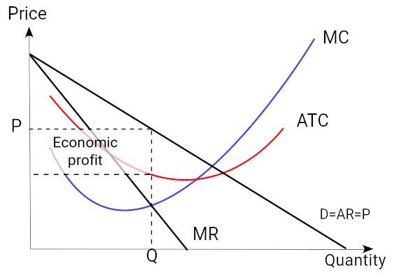
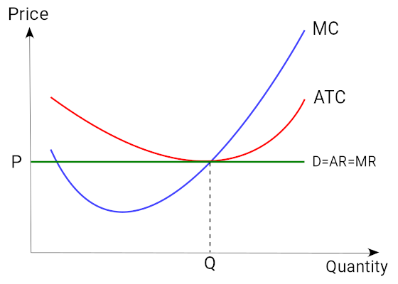
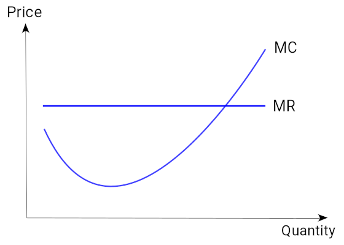
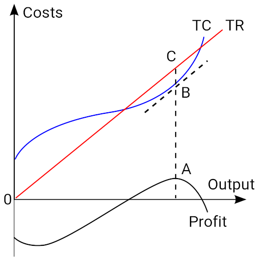
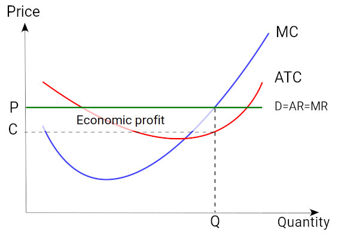
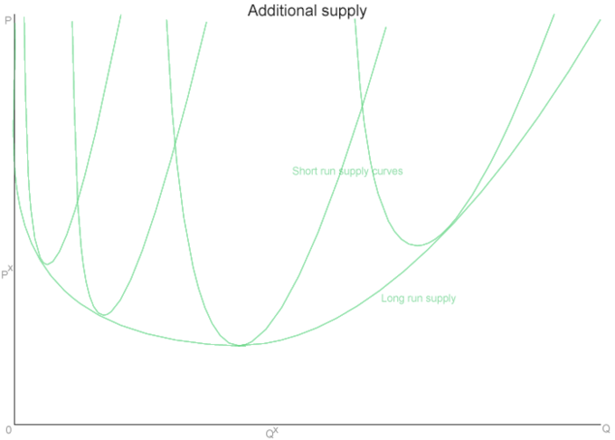
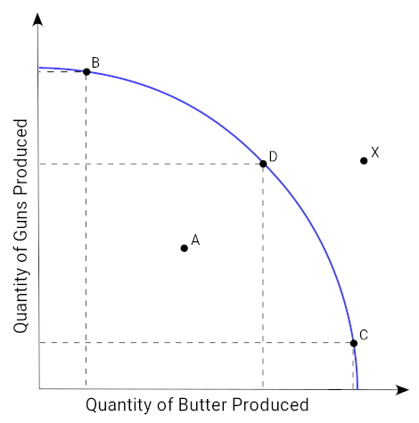

Table of Contents
10. Competitive Markets
10.1. Perfect Competition
10.1.1. Definition of Perfect Competition
10.1.2. Conditions of Perfect Competition
10.1.3. The Demand Curve in Perfect Competition
10.2. Production Decisions in Perfect Competition
10.2.1. Relationship Between Output and Revenue
10.2.2. Marginal Cost Profit Maximization Strategy
10.2.3. Shut Down Case
10.2.4. The Supply Curve in Perfect Competition
10.2.5. Short Run Firm Production Decision
10.3. Long-Run Outcomes
10.3.1. Long Run Supply Decisions
10.3.2. Long Run Market Equilibrium
10.3.3. Productive Efficiency
10.3.4. Allocative Efficiency
10.3.5. Entry and Exit of Firms
10. Competitive Markets
10.1. Perfect Competition
10.1.1. Definition of Perfect Competition
Perfect competition is a market structure that leads to the Pareto-efficient allocation of economic resources.
Learning Objective
Describe degrees of competition in different market structures
Key Points
- The major types of market structure include monopoly, monopolistic competition, oligopoly, and perfect competition.
- Perfect competition is an industry structure in which there are many firms producing homogeneous products. None of the firms are large enough to influence the industry.
- The characteristics of a perfectly competitive market include insignificant contributions from the producers, homogenous products, perfect information about products, no transaction costs, and no long-term economic profits.
- In practice, very few industries can be described as perfectly competitive, though agriculture comes close.
Key Terms
- oligopoly
- An economic condition in which a small number of sellers exert control over the market of a commodity.
- Monopolistic competition
- A market structure in which there is a large number of firms, each having a small proportion of the market share and slightly differentiated products.
- monopoly
- A situation, by legal privilege or other agreement, in which solely one party (company, cartel etc. ) exclusively provides a particular product or service, dominating that market and generally exerting powerful control over it.
Market structure is determined by the number and size distribution of firms in a market, entry conditions, and the extent of product differentiation. The major types of market structure include the following:
- Monopoly: An industry structure where a single firm produces a product for which there are no close substitutes. Monopolists are price makers. Barriers to entry and exit exist, and, in order to ensure profits, a monopoly will attempt to maintain them.
- Monopolistic competition: A market structure in which there is a large number of firms, each having a small portion of the market share and slightly differentiated products. There are close substitutes for the product of any given firm, so competitors have slight control over price. There are relatively insignificant barriers to entry or exit, and success invites new competitors into the industry.
- Oligopoly: An industry structure in which there are a few firms producing products that range from slightly differentiated to highly differentiated. Each firm is large enough to influence the industry. Barriers to entry exist.
- Perfect competition: An industry structure in which there are many firms, none large enough to influence the industry, producing homogeneous products. Firms are price takers. There are no barriers to entry. Agriculture comes close to being perfectly competitive.
Perfect competition leads to the Pareto-efficient allocation of economic resources. Because of this it serves as a natural benchmark against which to contrast other market structures. However, in practice, very few industries can be described as perfectly competitive. Nevertheless, it is used because it provides important insights.
A perfectly competitive market has several important characteristics:
- All producers contribute insignificantly to the market. Their own production levels do not change the supply curve.
- All producers are price takers. They cannot influence the market. If a firm tries to raise its price consumers would buy from a competitor with a lower price instead.
- Products are homogeneous. The characteristics of a good or service do not vary between suppliers.
- Producers enter and exit the market freely.
- Both buyers and sellers have perfect information about the price, utility, quality, and production methods of products.
- There are no transaction costs. Buyers and sellers do not incur costs in making an exchange of goods in a perfectly competitive market.
- Producers earn zero economic profits in the long run.
10.1.2. Conditions of Perfect Competition
A firm in a perfectly competitive market may generate a profit in the short-run, but in the long-run it will have economic profits of zero.
Learning Objective
Calculate total revenue, average revenue, and marginal revenue for a firm in a perfectly competitive market
Key Points
- A perfectly competitive market is characterized by many buyers and sellers, undifferentiated products, no transaction costs, no barriers to entry and exit, and perfect information about the price of a good.
- The total revenue for a firm in a perfectly competitive market is the product of price and quantity (TR = P * Q). The average revenue is calculated by dividing total revenue by quantity. Marginal revenue is calculated by dividing the change in total revenue by change in quantity.
- A firm in a competitive market tries to maximize profits. In the short-run, it is possible for a firm's economic profits to be positive, negative, or zero. Economic profits will be zero in the long-run.
- In the short-run, if a firm has a negative economic profit, it should continue to operate if its price exceeds its average variable cost. It should shut down if its price is below its average variable cost.
Key Term
- economic profit
- The difference between the total revenue received by the firm from its sales and the total opportunity costs of all the resources used by the firm.
The concept of perfect competition applies when there are many producers and consumers in the market and no single company can influence the pricing. A perfectly competitive market has the following characteristics:
- There are many buyers and sellers in the market.
- Each company makes a similar product.
- Buyers and sellers have access to perfect information about price.
- There are no transaction costs.
- There are no barriers to entry into or exit from the market.
All goods in a perfectly competitive market are considered perfect substitutes, and the demand curve is perfectly elastic for each of the small, individual firms that participate in the market. These firms are price takers--if one firm tries to raise its price, there would be no demand for that firm's product. Consumers would buy from another firm at a lower price instead.
Firm Revenues
A firm in a competitive market wants to maximize profits just like any other firm. The profit is the difference between a firm's total revenue and its total cost. For a firm operating in a perfectly competitive market, the revenue is calculated as follows:
- Total Revenue = Price * Quantity
- AR (Average Revenue) = Total Revenue / Quantity
- MR (Marginal Revenue) = Change in Total Revenue / Change in Quantity
The average revenue (AR) is the amount of revenue a firm receives for each unit of output. The marginal revenue (MR) is the change in total revenue from an additional unit of output sold. For all firms in a competitive market, both AR and MR will be equal to the price.
Profit Maximization
In order to maximize profits in a perfectly competitive market, firms set marginal revenue equal to marginal cost (MR=MC). MR is the slope of the revenue curve, which is also equal to the demand curve (D) and price (P). In the short-term, it is possible for economic profits to be positive, zero, or negative . When price is greater than average total cost, the firm is making a profit. When price is less than average total cost, the firm is making a loss in the market.
{kind=link}
In the short run, it is possible for an individual firm to make an economic profit. This scenario is shown in this diagram, as the price or average revenue, denoted by P, is above the average cost denoted by C .
Over the long-run, if firms in a perfectly competitive market are earning positive economic profits, more firms will enter the market, which will shift the supply curve to the right. As the supply curve shifts to the right, the equilibrium price will go down. As the price goes down, economic profits will decrease until they become zero.
When price is less than average total cost, firms are making a loss. Over the long-run, if firms in a perfectly competitive market are earning negative economic profits, more firms will leave the market, which will shift the supply curve left. As the supply curve shifts left, the price will go up. As the price goes up, economic profits will increase until they become zero.
In sum, in the long-run, companies that are engaged in a perfectly competitive market earn zero economic profits . The long-run equilibrium point for a perfectly competitive market occurs where the demand curve (price) intersects the marginal cost (MC) curve and the minimum point of the average cost (AC) curve.
{kind=link}
In the long-run, economic profit cannot be sustained. The arrival of new firms in the market causes the demand curve of each individual firm to shift downward, bringing down the price, the average revenue and marginal revenue curve. In the long-run, the firm will make zero economic profit. Its horizontal demand curve will touch its average total cost curve at its lowest point.
10.1.3. The Demand Curve in Perfect Competition
A perfectly competitive firm faces a demand curve is a horizontal line equal to the equilibrium price of the entire market.
Learning Objective
Describe the demand for goods in perfectly competitive markets
Key Points
- In a perfectly competitive market individual firms are price takers. The price is determined by the intersection of the market supply and demand curves.
- The demand curve for an individual firm is different from a market demand curve. The market demand curve slopes downward, while the firm's demand curve is a horizontal line.
- The firm's horizontal demand curve indicates a price elasticity of demand that is perfectly elastic.
Key Term
- Perfectly elastic
- Describes a situation when any increase in the price, no matter how small, will cause demand for a good to drop to zero.
In a perfectly competitive market the market demand curve is a downward sloping line, reflecting the fact that as the price of an ordinary good increases, the quantity demanded of that good decreases. Price is determined by the intersection of market demand and market supply; individual firms do not have any influence on the market price in perfect competition. Once the market price has been determined by market supply and demand forces, individual firms become price takers. Individual firms are forced to charge the equilibrium price of the market or consumers will purchase the product from the numerous other firms in the market charging a lower price (keep in mind the key conditions of perfect competition). The demand curve for an individual firm is thus equal to the equilibrium price of the market .

The demand curve for an individual firm is equal to the equilibrium price of the market. The market demand curve is downward-sloping.
The demand curve for a firm in a perfectly competitive market varies significantly from that of the entire market.The market demand curve slopes downward, while the perfectly competitive firm's demand curve is a horizontal line equal to the equilibrium price of the entire market. The horizontal demand curve indicates that the elasticity of demand for the good is perfectly elastic. This means that if any individual firm charged a price slightly above market price, it would not sell any products.
A strategy often used to increase market share is to offer a firm's product at a lower price than the competitors. In a perfectly competitive market, firms cannot decrease their product price without making a negative profit. Instead, assuming that the firm is a profit-maximizer, it will sell its goods at the market price.
10.2. Production Decisions in Perfect Competition
10.2.1. Relationship Between Output and Revenue
Output is the amount of a good produced; revenue is the amount of income made from sales minus all business expenses.
Learning Objective
Describe the relationship between output and revenue
Key Points
- In economics, output is defined as the quantity of goods or services produce in a certain period of time by a firm, industry, or country. Output can be consumed or used for further production.
- Revenue, also known as turnover, is the income that a company receives from normal business activities, usually from the sale of goods and services. Companies can also receive revenue from interest, royalties, and other fees.
- The performance of a company is determined by how its asset inflows (revenues) compare with its asset outflows (expenses). Revenue is a direct indication of earning quality.
Key Terms
- revenue
- The total income received from a given source.
- output
- Production; quantity produced, created, or completed.
Output
In economics, output is defined as the quantity of goods or services produced in a certain period of time by a firm, industry, or country. Output can be consumed or used for further production. Output is important on a business and national scale because it is output, not large sums of money, that makes a company or country wealthy.
There are many factors that influence the level of output including changes in labor, capital, and the efficiency of the factors of production. Anything that causes one of the factors to increase or decrease will change the output in the same manner.
Revenue
Revenue, also known as turnover, is the income that a company receives from normal business activities, usually from the sale of goods and services. Revenue is the money that is made as a result of output, or amount of goods produced. Companies can also receive revenue from interest, royalties, and other fees.
Revenue can refer to general business income, but it can also refer to the amount of money made during a specific time period. When companies produce a certain quantity of a good (output), the revenue is the amount of income made from sales during a set time period.
Businesses analyze revenue in their financial statements. The performance of a company is determined by how its asset inflows (revenues) compare with its asset outflows (expenses). Revenue is an important financial indiator, though it is important to note that companies are profit maximizers, not revenue maximizers.
Importance of Output and Revenue
In order for a company or firm to be successful, it must focus on both the output and revenue. The quantity of goods produced must meet public demand, but the company must also be able to sell those goods in order to generate revenue. The production of goods carries a cost, so companies want to find a level of output that maximizes profit, not revenue .
Krispy Kreme's output is donuts. It generates revenue by selling its output. It is however, a profit maximizer, not an output or revenue maximizer.
10.2.2. Marginal Cost Profit Maximization Strategy
In order to maximize profit, the firm should set marginal revenue (MR) equal to the marginal cost (MC).
Learning Objective
Calculate marginal costs and marginal revenues
Key Points
- Marginal cost is the increase in total cost from producing one additional unit.
- The marginal revenue is the increase in revenue from the sale of one additional unit.
- One way to determine how to generate the largest profit is to use the marginal revenue-marginal cost perspective. This strategy is based on the fact that the total profit reaches its maximum point where marginal revenue equals marginal profit.
Key Terms
- marginal cost
- The increase in cost that accompanies a unit increase in output; the partial derivative of the cost function with respect to output. Additional cost associated with producing one more unit of output.
- marginal revenue
- The additional profit that will be generated by increasing product sales by one unit.
Marginal Cost
Marginal cost is the change in the total cost that occurs when the quantity produced is increased by one unit . It is the cost of producing one more unit of a good. When more goods are produced, the marginal cost includes all additional costs required to produce the next unit. For example, if producing one more car requires the building of an additional factory, the marginal cost of producing the additional car includes all of the costs associated with building the new factory.
{kind=link}
This graph shows a typical marginal cost (MC) curve with marginal revenue (MR) overlaid.
Marginal cost is the change in total cost divided by the change in output.
An example of marginal cost is evident when the cost of making one pair of shoes is \$30. The cost of making two pairs of shoes is \$40. Therefore the marginal cost of the second shoe is \$40 -\$30=\$10.
Marginal Revenue
Marginal revenue is the additional revenue that will be generated by increasing product sales by one unit. In a perfectly competitive market, the price of the product stays the same when another unit is produced. Marginal revenue is calculated by dividing the change in total revenue by the change in output quantity.
For example, if the price of a good in a perfectly competitive market is \$20, the marginal revenue of selling one additional unit is \$20.
Marginal Cost-Marginal Revenue Perspective
Profit maximization is the short run or long run process by which a firm determines the price and output level that will result in the largest profit. Firms will produce up until the point that marginal cost equals marginal revenue. This strategy is based on the fact that the total profit reaches its maximum point where marginal revenue equals marginal profit . This is the case because the firm will continue to produce until marginal profit is equal to zero, and marginal profit equals the marginal revenue (MR) minus the marginal cost (MC).

This graph shows profit maximization using the marginal cost perspective.
Another way of thinking about the logic is of producing up until the point of MR=MC is that if MR>MC, the firm should make more units: it is earning a profit on each. If MR<MC, then the firm should produce less: it is making a loss on each additional product it sells.
10.2.3. Shut Down Case
A firm will implement a production shutdown if the revenue from the sale of goods produced cannot cover the variable costs of production.
Learning Objective
Apply shutdown conditions to determine a firm's production status
Key Points
- Economic shutdown occurs within a firm when the marginal revenue is below average variable cost at the profit-maximizing output.
- When a shutdown is required the firm failed to achieve a primary goal of production by not operating at the level of output where marginal revenue equals marginal cost.
- If the revenue the firm is making is greater than the variable cost (R>VC) then the firm is covering it's variable costs and there is additional revenue to partially or entirely cover the fixed costs.
- If the variable cost is greater than the revenue being made (VC>R) then the firm is not even covering production costs and it should be shutdown.
- The decision to shutdown production is usually temporary. If the market conditions improve, due to prices increasing or production costs falling, then the firm can resume production.
- When a shutdown last for an extended period of time, a firm has to decide whether to continue to business or leave the industry.
Key Terms
- marginal cost
- The increase in cost that accompanies a unit increase in output; the partial derivative of the cost function with respect to output. Additional cost associated with producing one more unit of output.
- marginal revenue
- The additional profit that will be generated by increasing product sales by one unit.
- variable cost
- A cost that changes with the change in volume of activity of an organization.
Economic Shutdown
A firm will choose to implement a production shutdown when the revenue received from the sale of the goods or services produced cannot cover the variable costs of production. In this situation, a firm will lose more money when it produces goods than if it does not produce goods at all. Producing a lower output would only add to the financial losses, so a complete shutdown is required. If a firm decreased production it would still acquire variable costs not covered by revenue as well as fixed costs (costs inevitably incurred). By stopping production the firm only loses the fixed costs .

Firms will produce as long as marginal revenue (MR) is greater than average total cost (ATC), even if it is less than the variable, or marginal cost (MC)
Economic shutdown occurs within a firm when the marginal revenue is below average variable cost at the profit-maximizing output. The goal of a firm is to maximize profits and minimize losses. When a shutdown is required the firm failed to achieve a primary goal of production by not operating at the level of output where marginal revenue equals marginal cost.
The Shutdown Rule
In the short run, a firm that is operating at a loss (where the revenue is less that the total cost or the price is less than the unit cost) must decide to operate or temporarily shutdown. The shutdown rule states that "in the short run a firm should continue to operate if price exceeds average variable costs. "
When determining whether to shutdown a firm has to compare the total revenue to the total variable costs. If the revenue the firm is making is greater than the variable cost (R>VC) then the firm is covering it's variable costs and there is additional revenue to partially or entirely cover the fixed costs. One the other hand, if the variable cost is greater than the revenue being made (VC>R) then the firm is not even covering production costs and it should be shutdown immediately.
Implications of a Shutdown
The decision to shutdown production is usually temporary. It does not automatically mean that a firm is going out of business. If the market conditions improve, due to prices increasing or production costs falling, then the firm can resume production. Shutdowns are short run decisions. When a firm shuts down it still retains capital assets, but cannot leave the industry or avoid paying its fixed costs.
A firm cannot incur losses indefinitely which impacts long run decisions. When a shutdown last for an extended period of time, a firm has to decide whether to continue to business or leave the industry. The decision to exit is made over a period of time. A firm that exits an industry does not earn any revenue, but is also does not incur fixed or variable costs.
10.2.4. The Supply Curve in Perfect Competition
The total revenue-total cost perspective and the marginal revenue-marginal cost perspective are used to find profit maximizing quantities.
Learning Objective
Use cost curves to find profit-maximizing quantities
Key Points
- In a free market economy, firms use cost curves to find the optimal point of production (minimizing cost).
- Profit maximization is the process that a firm uses to determine the price and output level that returns the greatest profit when producing a good or service.
- The total revenue-total cost perspective recognizes that profit is equal to the total revenue (TR) minus the total cost (TC).
- The marginal revenue-marginal cost perspective relies on the understanding that for each unit sold, the marginal profit equals the marginal revenue (MR) minus the marginal cost (MC).
Key Terms
- marginal revenue
- The additional profit that will be generated by increasing product sales by one unit.
- Total Revenue
- The profit from each item multiplied by the number of items sold.
Cost Curve
In economics, a cost curve is a graph that shows the costs of production as a function of total quantity produced. In a free market economy, firms use cost curves to find the optimal point of production (minimizing cost). By locating the optimal point of production, firms can decide what output quantities are needed. The various types of cost curves include total, average, marginal curves. Some of the cost curves analyze the short run, while others focus on the long run.
Profit Maximization
Profit maximization is the short run or long run process that a firm uses to determine the price and output level that returns the greatest profit when producing a good or service.
Graphing Profit Maximization
There are two ways in which cost curves can be used to find profit maximizing quantities: the total revenue-total cost perspective and the marginal revenue-marginal cost perspective.
The total revenue-total cost perspective recognizes that profit is equal to the total revenue (TR) minus the total cost (TC). When a table of costs and revenues is available, a firm can plot the data onto a profit curve. The profit maximizing output is the one at which the profit reaches its maximum .
{kind=link}
This graph depicts profit maximization on a total cost curve.
The marginal revenue-marginal cost perspective relies on the understanding that for each unit sold, the marginal profit equals the marginal revenue (MR) minus the marginal cost (MC). If the marginal revenue is greater than the marginal cost, then the marginal profit is positive and a greater quantity of the good should be produced. Likewise, if the marginal revenue is less than the marginal cost, the marginal profit is negative and a lesser quantity of the good should be produced .

This graph shows profit maximization using a marginal cost curve.
Profit maximization is directly impacts the supply and demand of a product. Supply curves are used to show an estimation of variables within a market economy, one of which is the general price level of the product.
10.2.5. Short Run Firm Production Decision
The short run is the conceptual time period where at least one factor of production is fixed in amount while other factors are variable.
Learning Objective
Compare factors that lead to short-run shut downs or long-run exits
Key Points
- Fixed costs have no impact on a firm's short run decisions. However, variable costs and revenues affect short run profits.
- When a firm is transitioning from short run to long run it will consider the current and future equilibrium for supply and demand.
- A firm will implement a production shutdown when the revenue coming in from the sale of goods cannot cover the variable costs of production.
- A short run shutdown is designed to be temporary. When a firm is shutdown for the short run, it still has to pay fixed costs and cannot leave the industry. However, a firm cannot incur losses indefinitely. Exiting an industry is a long term decision.
Key Terms
- variable cost
- A cost that changes with the change in volume of activity of an organization.
- profit
- Total income or cash flow minus expenditures. The money or other benefit a non-governmental organization or individual receives in exchange for products and services sold at an advertised price.
- shutdown
- The action of stopping operations; a closing, of a computer, business, event, etc.
Short Run Profit
In an economic market all production in real time occurs in the short run. The short run is the conceptual time period where at least one factor of production is fixed in amount while other factors are variable in amount. Fixed costs have no impact on a firm's short run decisions. However, variable costs and revenues affect short run profits. In the short run, a firm could potentially increase output by increasing the amount of the variable factors. An example of a variable factor being increased would be increasing labor through overtime.
In the short run, a firm that is maximizing its profits will:
- Increase production if the marginal cost is less than the marginal revenue.
- Decrease production if marginal cost is greater than marginal revenue.
- Continue producing if average variable cost is less than price per unit.
- Shut down if average variable cost is greater than price at each level of output.
Transition from Short Run to Long Run Profit
When a firm is transitioning from the short run to the long run it will consider the current and future equilibrium for supply and demand. The firm will also take adjustments into account that can disturb equilibrium such as the sales tax rate. The transition involves analyzing the current state of the market as well as revenue and combining the results with long run market projections.
Short Run Shutdown vs. Long Run Exit
The goal of a firm is to maximize profits by minimizing losses. In economics, a firm will implement a production shutdown when the revenue coming in from the sale of goods cannot cover the variable costs of production. The firm would experience higher loss if it kept producing goods than if it stopped production for a period of time. Revenue would not cover the variable costs associated with production. Instead, during a shutdown the firm is only paying the fixed costs.
A short run shutdown is designed to be temporary: it does not mean that the firm is going out of business. If market conditions improve, due to prices increasing or production costs falling, the firm can restart production. When a firm is shut down in the short run, it still has to pay fixed costs and cannot leave the industry. However, a firm cannot incur losses indefinitely. Exiting an industry is a long term decision. If market conditions do not improve a firm can exit the market. By exiting the industry, the firm earns no revenue but incurs no fixed or variable costs.
Short Run Supply Curve
In a perfectly competitive market, the short run supply curve is the marginal cost (MC) curve at and above the shutdown point. The portions of the marginal cost curve below the shutdown point are no part of the supply curve because the firm is not producing in that range. The short run supply curve is used to graph a firm's short run economic state .
{kind=link}
This graph shows a short run supply curve in a perfect competitive market. The short run supply curve is the marginal cost curve at and above the shutdown point. The portions of the marginal cost curve below the shutdown point are not part of the supply curve because the firm is not producing in that range.
10.3. Long-Run Outcomes
10.3.1. Long Run Supply Decisions
The long-run supply curve in a perfectly competitive market has three parts; a downward sloping curve, a flat portion, and an upwards sloping curve.
Learning Objective
Describe the long-run market supply curve of a perfectly competitive market
Key Points
- The long-run supply curves of a market is the sum of a series of that market's short-run supply curves.
- Most supply curves are composed of three periods of production: a period of increasing returns to scale, constant returns to scale, and decreasing returns to scale.
- A long-run supply curve connects the points of constant returns to scales of a markets' short-run supply curves.
Key Terms
- constant returns to scale
- Changes in output resulting from a proportional change in all inputs (where all inputs increase by a constant factor). If output increases by that same proportional change then there are constant returns to scale (CRS).
- decreasing returns to scale
- Changes in output resulting from a proportional change in all inputs (where all inputs increase by a constant factor). If output increases by less than the proportional change then there are decreasing returns to scale.
- increasing returns to scale
- The characteristic of production in which output increases by more than the proportional increase in inputs.
The long-run supply curve of a market is the sum of a series of short-run supply curves in the market (). Prior to determining how the long-run supply curve looks, its important to understand short-run supply curves.
{kind=link}
As the chart demonstrates, a market's long-run supply curve is the sum of a series of short-run supply curves in a given market.
Short-Run Supply Curves
While most people focus on the second half of a supply curve, which has a positive slope, that is not how the supply and pricing decision works in practice. As you can see from the chart, the first items that are produced start out with a very high price. This is because it is very expensive for a producer to manufacture one item. The producer has to incur fixed costs, such as learning the necessary skills to produce the item and purchasing new tools. These initial fixed costs make the cost of producing one good very expensive.
However, as more goods are produced, those initial fixed costs are spread out over more items. This decreases the price of per unit of each good produced for a period of time. As a result, in the early stages of production the supply curve is sloping downward as you can see in the chart. This period of supply is known as "increasing returns to scale," because a proportional increase in resources yields a greater proportional increase in output.
At some point, the per unit share of fixed costs becomes less than the variable costs of producing one more item. Variable expenses include purchasing more raw materials to manufacture another item. When this occurs, the supply curve slopes upward. Thus, in the short-run, a market's supply curve looks like an oddly shaped "u." This period of supply is known as "decreasing returns to scale," because a proportional increase in resources yields a smaller proportional increase in its amount in output. Between these two periods is the "constant returns to scale," where a proportion increase in resources yields an equal proportional increase in the amount of output.
Long-Run Supply Curves
A market's long-run supply curve is the sum of the market's short-run supply curves taken at different points of time. As a result, a long-run supply curve for a market will look very similar to short-run supply curves for a market, but more stretched out; the long-term market curve will a wider "u." A long-run supply curve connects the points of constant returns to scales of a markets' short-run supply curves. ; the bottom of each short-term supply curve's "u." Consider the attached chart.
The first short-run supply curve reflects what happens when a firm enters into a new market for the first time. When it does, it should make an economic profit. In a perfectly competitive market, firms can freely enter and exit an industry. When other business notice that the first firm is making it profit, they will enter the market to capture some of that profit and because there is nothing preventing them from doing so. In the early stages of the market, where only one or a few firms are producing goods, the market experiences increasing returns to scale, similar to what an individual firm would experience.
As more firms enter the market and time passes, production yields less and less returns in comparison to the production. Eventually the market reaches a state of constant returns to scale. How long this period of constant returns is varies by industry. Agriculture has a longer period of constant returns while technology has shorter.
Eventually, production of goods in a market yields less of a return than the amount of goods that go into product, which causes the market to enter into a period of decreasing returns to scale and the market's supply curve slopes upward.
10.3.2. Long Run Market Equilibrium
The long-run equilibrium of a perfectly competitive market occurs when marginal revenue equals marginal costs, which is also equal to average total costs.
Learning Objective
Describe the long-run market equilibrium
Key Points
- In a perfectly competitive market, demand is perfectly elastic. This means the demand curve is a horizontal line.
- Once equilibrium has been achieved, firms in a perfectly competitive market can't achieve economic profit; it can only break even.
- A perfectly competitive market in equilibrium is productively and allocatively efficient.
Key Term
- long-run
- The conceptual time period in which there are no fixed factors of production.
The long-run is the period of time where there are no fixed variables of production. As with any other economic equilibrium, it is defined by demand and supply.
Demand
In a perfect market, demand is perfectly elastic . The demand curve also represents marginal revenue, which is important to remember later when we calculate quantity supplied. That means regardless of how much is produced by the suppliers, the price will remain constant.

In a perfectly competitive market, demand is perfectly elastic.
Supply
In a perfectly competitive market, it is assumed that all of the firms participating in production are trying to maximize their profits. So a firm will produce goods until the marginal costs of production equal the marginal revenues from sales. In a perfectly competitive market in the long-term, this is taken one step further. In a perfectly competitive market, long-run equilibrium will occur when the marginal costs of production equal the average costs of production which also equals marginal revenue from selling the goods. So the equilibrium will be set, graphically, at a three-way intersection between the demand, marginal cost and average total cost curves.
Repercussions of Equilibrium
A perfectly competitive market in equilibrium has several important characteristics.
- Firms can't make economic profit; the best they can do is break even so that their revenues equals their costs.
- The market is productively and allocatively efficient. This means that not only is the market using all of its resources efficiently, it is using its resources in a way that maximizes the social welfare.
- Economic surplus is maximized, which means there is no deadweight loss. Attempting to improve the conditions of one group would harm the interests of the other.
10.3.3. Productive Efficiency
Productive efficiency occurs when production of a good is achieved at the lowest resource cost possible, given the level of production of other goods.
Learning Objective
Describe the efficiency of production in perfectly competitive markets
Key Points
- An equilibrium may be productively efficient without being allocatively efficient.
- Another way to define productive efficiency is that it occurs when the highest possible output of one good is produced, given the production level of the other good(s).
- Productive efficiency requires that all firms operate using best-practice technological and managerial processes.
- Productive efficiency requires that all firms operate using best-practice technological and managerial processes.
Key Term
- Productive Efficiency
- An economic status that occurs when when the highest possible output of one good is produced, given the production level of the other good(s).
Productive efficiency occurs when the economy is getting maximum output from its resources . The concept is illustrated on a production possibility frontier (PPF) where all points on the curve are points of maximum productive efficiency (i.e., no more output can be achieved from the given inputs). An equilibrium may be productively efficient without being allocatively efficient. In other words, just because a market maximizes the output it generates, that doesn't mean that social welfare is maximized.
{kind=link}
This chart shows production possibilities for production of guns and butter. Points B, C, and D are productively efficient and point A is not. Point X is only possible if the means of production improve.
Production efficiency occurs when production of one good is achieved at the lowest resource (input) cost possible, given the level of production of the other good(s). Another way to define productive efficiency is that it occurs when the highest possible output of one good is produced, given the production level of the other good(s). In long-run equilibrium for perfectly competitive markets, productive efficiency occurs at the base of the average total cost curve, or where marginal cost equals average total cost. Productive efficiency requires that all firms operate using best-practice technological and managerial processes. By improving these processes, an economy or business can extend its production possibility frontier outward, so that efficient production yields more output.
Monopolistic companies may not be productively efficient because companies operating in a monopoly have less of an incentive to maximize output due to lack of competition. However, due to economies of scale, it may be possible for the profit-maximizing level of output of monopolistic companies to occur with a lower price to the consumer than perfectly competitive companies. So, consumers may pay less with a monopoly, but a monopolistic market would not achieve productive efficiency.
10.3.4. Allocative Efficiency
Free markets iterate towards higher levels of allocative efficiency, aligning the marginal cost of production with the marginal benefit for consumers.
Learning Objective
Explain resource allocation in terms of consumer and producer surplus and market equilibrium
Key Points
- Allocative efficiency occurs where a good or service's marginal benefit is equal to its marginal cost. At this point the social surplus is maximized with no deadweight loss.
- Free markets that are perfectly competitive are generally allocatively efficient.
- Allocative efficiency is the main means to measure the degree markets and public policy improve or harm society or other specific subgroups.
- Under these basic premises, the goal of maximizing allocative efficiency can be defined according to some neutral principle where some allocations are objectively better than others.
Key Term
- Allocative efficiency
A state of the economy in which production represents consumer preferences; in particular, every good or service is produced up to the point where the last unit provides a marginal benefit to consumers equal to the marginal cost of producing.
Allocative efficiency is the degree to which the marginal benefits consumers receive from goods are as close as possible to the marginal costs of producing them. At the optimal level of allocative efficiency in a given market, the last unit's marginal cost would be perfectly equal to the marginal benefit it provides consumers, resulting in no deadweight loss.
The amount of value generated in a market that efficient equals the social value of the produced output minus the value of resources used in production. Optimal efficiency is higher in free markets, though reality always has some limitations and imperfections to detract from completely perfect allocative efficiency. Markets are not efficient if it is subject to:
When an economy has allocative efficiency, it produces goods and services that have the highest demand and that society finds most desirable. For example, for the U.S. to achieve an allocative efficient market, it would need to produce a lot of coffee.
- monopolies,
- monopsonies,
- externalities,
- public goods which construe market failure, or
- price controls which construe government failure in addition to taxation.
Allocative efficiency is the main means to measure the degree markets and public policy improve or harm society or other specific subgroups.
Although there are different standards of evaluation for the concept of allocative efficiency, the basic principle asserts that in any economic system, choices in resource allocation produce both "winners" and "losers" relative to the choice being evaluated. The principles of rational choice, individual maximization, utilitarianism, and market theory further suppose that the outcomes for winners and losers can be identified, compared, and measured.
Under these basic premises, the goal of maximizing allocative efficiency can be defined according to some neutral principle where some allocations are objectively better than others. For example, an economist might say that a change in policy increases allocative efficiency as long as those who benefit from the change (winners) gain more than the losers lose.
10.3.5. Entry and Exit of Firms
The absence of barriers of entry and exit is a necessary condition for a market to be perfectly competitive.
Learning Objective
Explain the entry and exit of firms in perfectly competitive markets.
Key Points
- Barriers to entry are obstacles that make it difficult to enter a given market. The term can refer to hindrances a firm faces in trying to enter a market or industry. Barriers can be obstacles an individual faces in trying to enter into a profession, such as education or licensing requirements.
- Because firms are able to freely enter and exit in response to potential profit, this means that in the long-run firms cannot make economic profit; they can only break even.
- Barriers to exit are obstacles in the path of a firm which wants to leave a given market or industrial sector.
Key Terms
- barriers to exit
- Obstacles in the path of a firm that want to leave a market or industrial sector.
- Barriers to entry
- Obstacles that make it difficult to enter a given market. The term can refer to hindrances a firm faces in trying to enter a market or industry, such as government regulation, or a large, established firm taking advantage of economies of scale.
Barriers to entry and exit are an important characteristics to consider when analyzing a market. In perfectly competitive markets, there are no barriers to entry or exit. This is a critical characteristic of perfectly competitive markets because firms are able to freely enter and exit in response to potential profit. Therefore, in the long-run firms cannot make economic profit but can only break even.
However, in most other types of markets barriers do exist. These types of barriers, defined below, prevent free entry to or exit from markets.
Barriers to Entry
Barriers to entry are obstacles that make it difficult to enter a given market. The term can refer to hindrances a firm faces in trying to enter a market or industry. Barriers can also be obstacles an individual faces in trying to gain entrance to a profession, such as education or licensing requirements.
Because barriers to entry protect incumbent firms and restrict competition in a market, they can distort prices. Monopolies are often aided by barriers to entry. Examples of barriers to entry include:
- Capital: need the capital to start up such as equipment, building, and raw materials.
- Customer loyalty: Large incumbent firms may have existing customers loyal to established products. The presence of established strong brands within a market can be a barrier to entry in this case.
- Economy of scale: The increase in efficiency of production as the number of goods being produced increases. Cost advantages can sometimes be quickly reversed by advances in technology.
- Intellectual property: Potential entrant requires access to equally efficient production technology as the combatant monopolist in order to freely enter a market. Patents give a firm the legal right to stop other firms producing a product for a given period of time, and so restrict entry into a market. Patents are intended to encourage invention and technological progress by guaranteeing proceeds as an incentive. Similarly, trademarks and service marks may represent a kind of entry barrier for a particular product or service if the market is dominated by one or a few well-known names .
Patents are an example of intellectual property. If a firm does not own intellectual property relevant to the industry, that could prove to be a significant barrier to entry into that market.
Barriers to Exit
Barriers to exit are obstacles in the path of a firm which wants to leave a given market or industrial sector. These obstacles often cost the firm financially to leave the market and may prohibit it doing so. If the barriers of exit are significant; a firm may be forced to continue competing in a market, as the costs of leaving may be higher than those incurred if they continue competing in the market. The factors that may form a barrier to exit include:
- High investment in non-transferable fixed assets: This is particularly common for manufacturing companies that invest heavily in capital equipment which is specific to one task.
- High redundancy costs: If a company has a large number of employees, employees with high salaries, or contracts with employees which stipulate high redundancy payments, then the firm may face significant cost if it wishes to leave the market.
- Other closure costs: Contract contingencies with suppliers or buyers and any penalty costs incurred from cutting short tenancy agreements.
- Potential upturn:Firms may be influenced by the potential of an upturn in their market that may reverse their current financial situation.